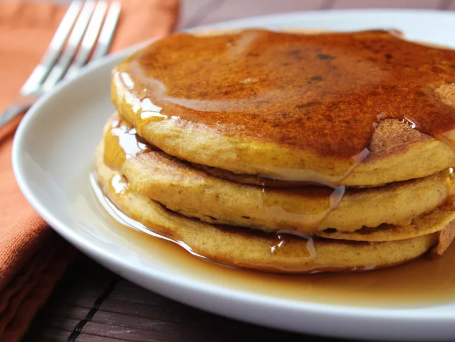

Pumpkin Pancake

Pumpkin pancakes are good in any season
but are perfect to warm you up on cold winter mornings.
You can use either canned or cooked fresh pumpkin.
Ingredients:
- 1 ½ cups milk
- 1 cup pumpkin puree
- 1 large egg
- 2 tablespoons vegetable oil
- 2 tablespoons vinegar
- 2 cups all-purpose flour
- 3 tablespoons brown sugar
- 2 teaspoons baking powder
- 1 teaspoon baking soda
- 1 teaspoon ground allspice
- 1 teaspoon ground cinnamon
- ½ teaspoon ground ginger
- ½ teaspoon salt
- cooking spray
Directions:
- Stir together milk, pumpkin, egg, oil, and vinegar in a large bowl until well combined.
- Whisk together flour, brown sugar, baking powder, baking soda, allspice,
cinnamon, ginger, and salt in a separate bowl.
Add to pumpkin mixture; whisk just until combined.
- Spray a griddle or frying pan with cooking spray; heat over medium-high heat.
- Pour 3 to 4 tablespoons batter for each pancake onto the hot
griddle and flatten batter slightly with a spoon.
Cook until small bubbles appear, about 2 minutes.
Flip and cook until golden brown, about 2 more minutes. Repeat with remaining batter.